Version 4.1 | Juillet 2026 | mila.afroit.net
Utilisez cette adresse pour tester les nouvelles fonctionnalités en toute sécurité (les données sont des copies de test).
| Adresse | https://staging-mila.afroit.net |
| Identifiant | admin |
| Mot de passe | capelini |
Utilisez cette adresse pour l'exploitation réelle une fois les tests validés.
| Adresse | https://mila.afroit.net |
| Identifiant | client |
| Mot de passe | client123 |
Utilisez Google Chrome ou Firefox. Une fois connecté, cliquez sur le menu Immobilier sur l'écran d'accueil pour commencer.
La barre de navigation donne accès à 5 sections :
| Section | Contenu |
|---|---|
| 📊 Tableau de bord | Résumé en temps réel : KPIs, baux, alertes, interventions |
| 🏢 Patrimoine | Immeubles et biens immobiliers |
| 📄 Locations | Baux, modèles, pénalités |
| 🔧 Interventions | Travaux et services |
| ⚙️ Configuration | Plans de facturation, motifs, paramètres |
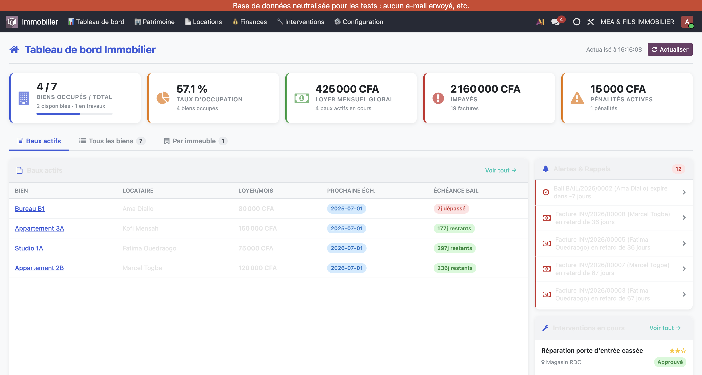
Le tableau de bord se rafraîchit automatiquement (60 secondes par défaut) et dispose d'un bouton Actualiser en haut à droite.
Chaque tuile est cliquable et affiche une liste filtrée des enregistrements concernés :
| Tuile | Valeur actuelle | Cliquer ouvre |
|---|---|---|
| Biens totaux | 6 biens (0 dispo / 1 en travaux) | Liste de tous les biens |
| Taux d'occupation | 83,3 % | Liste des biens occupés |
| LMR Global | 425 000 CFA | Liste des baux actifs |
| Impayés | 150 000 CFA | Factures impayées en retard |
| Pénalités actives | 15 000 CFA | Pénalités confirmées non facturées |
Chaque ligne liste : bien, locataire, loyer, prochaine date de facturation, jours avant expiration (rouge si < 30 jours, vert si ok). Cliquer sur une ligne ouvre la fiche du bail ; cliquer sur le nom du bien ouvre la fiche du bien.
Patrimoine → Immeubles
Les immeubles regroupent les biens. Notre parc actuel :
- Immeuble Palmeraie — Avenue de la Paix, Lomé — 6 biens
Patrimoine → Biens immobiliers
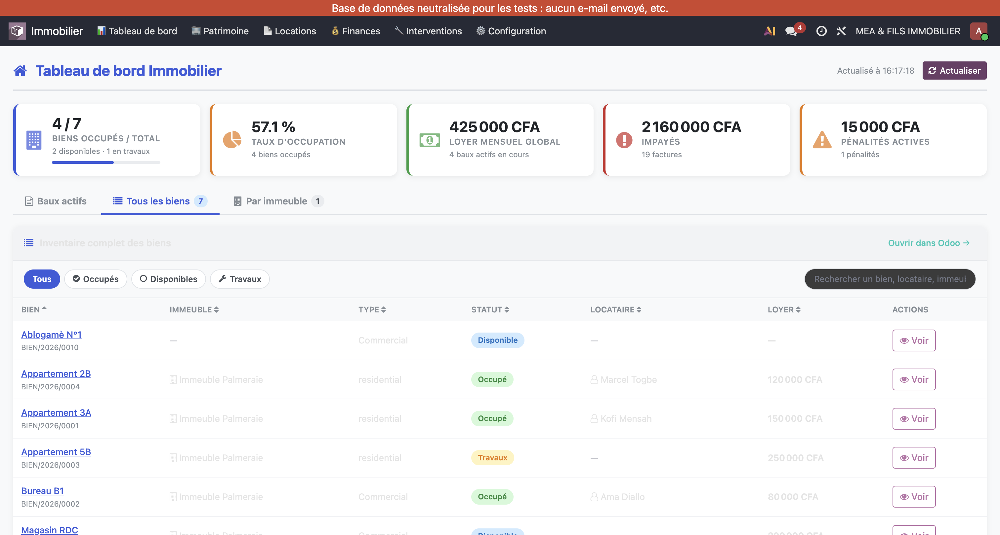
Notre parc actuel :
| Bien | Type | Loyer réf. | Statut |
|---|---|---|---|
| Appartement 3A | Résidentiel | 150 000 CFA | Occupé |
| Bureau B1 | Commercial | 80 000 CFA | Occupé |
| Appartement 5B | Résidentiel | 250 000 CFA | En travaux |
| Appartement 2B | Résidentiel | 120 000 CFA | Occupé |
| Studio 1A | Résidentiel | 75 000 CFA | Occupé |
| Magasin RDC | Commercial | 200 000 CFA | Disponible |
Le statut se met à jour automatiquement à la confirmation/résiliation d'un bail.
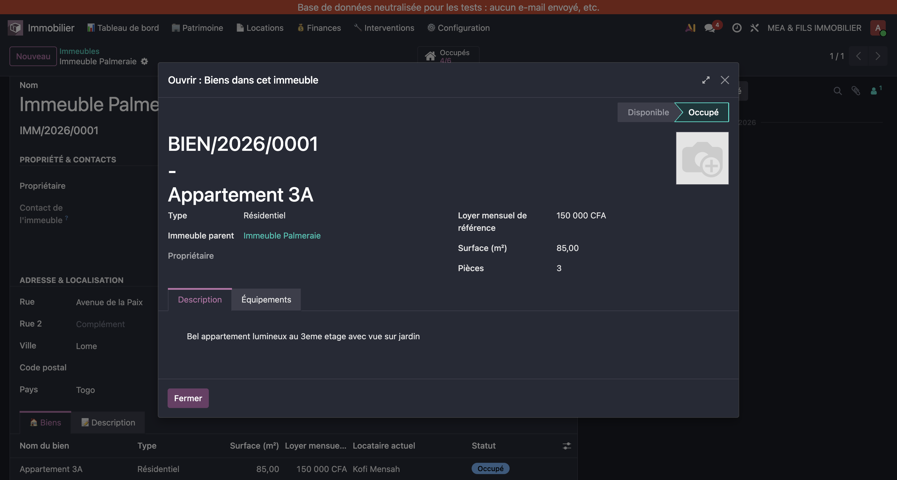
Contenu : statut (barre), bouton "X Baux" (accès rapide), surface, loyer de référence, équipements, chatter (historique).
Locations → Baux Actifs
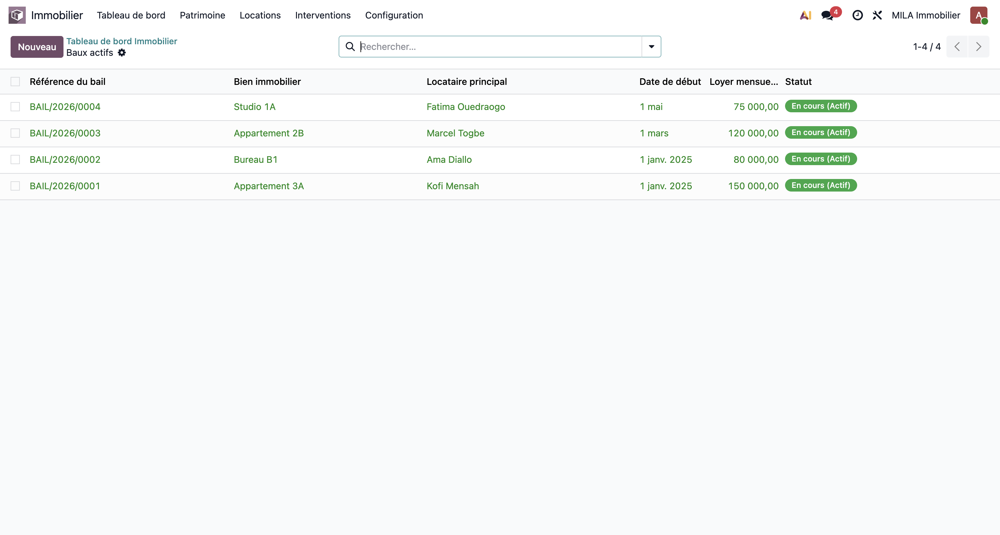
Baux actifs actuels :
| Référence | Bien | Locataire | Loyer | Début | Fin |
|---|---|---|---|---|---|
| BAIL/2026/0001 | Appartement 3A | Kofi Mensah | 150 000 CFA | 01/01/2025 | 31/12/2025 |
| BAIL/2026/0002 | Bureau B1 | Ama Diallo | 80 000 CFA | 01/03/2026 | 28/02/2027 |
| BAIL/2026/0003 | Appartement 2B | Marcel Togbe | 120 000 CFA | 01/03/2026 | 28/02/2027 |
| BAIL/2026/0004 | Studio 1A | Fatima Ouedraogo | 75 000 CFA | 01/05/2026 | 30/04/2027 |
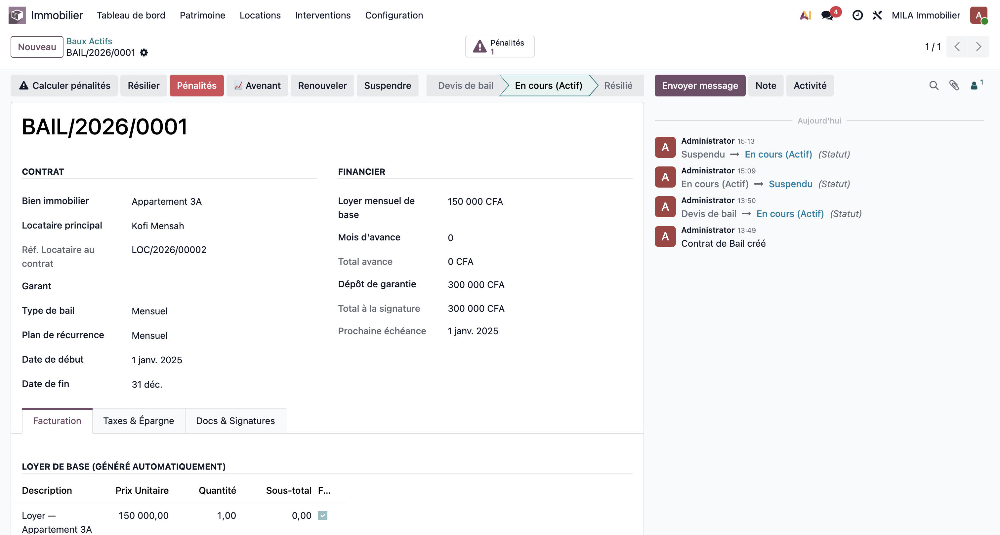
Barre de statut :
Devis de bail → En cours (Actif) → Suspendu → Résilié
Boutons d'action :
| Bouton | Rôle |
|---|---|
| Calculer pénalités | Calcule les pénalités sur les factures en retard |
| Résilier | Met fin au bail avec date et motif |
| 📈 Avenant | Modifie les termes du bail en cours (traçabilité) |
| Renouveler | Prépare le renouvellement à échéance |
| Suspendre | Suspend temporairement le bail |
| X Pénalités | Smart button : liste des pénalités du bail |
Scénario : Marcel Togbe loue l'Appartement 2B à partir du 1er mars 2026, 120 000 CFA/mois, 2 mois de caution.
Étapes :
1. Locations → Baux Actifs → Nouveau
2. Champs à remplir :
- Bien immobilier : Appartement 2B
- Locataire : Marcel Togbe (recherche et sélection)
- Type de bail : Mensuel
- Plan de récurrence : Mensuel
- Loyer mensuel : 120 000
- Dépôt de garantie : 240 000 (2 mois)
- Date de début : 01/03/2026
- Date de fin : 28/02/2027
3. Enregistrer
4. Cliquer En cours (Actif) dans la barre de statut
→ Résultat : statut du bail = En cours (Actif), statut de l'Appartement 2B = Occupé
Scénario : La société TechTogo SARL loue le Magasin RDC (200 000 CFA/mois, 3 mois de caution, bail de 2 ans).
Étapes :
1. Locations → Baux Actifs → Nouveau
2. Champs :
- Bien : Magasin RDC
- Locataire : TechTogo SARL (cocher la case "Société" lors de la création du contact)
- Type de bail : Commercial
- Plan de récurrence : Mensuel
- Loyer mensuel : 200 000
- Dépôt de garantie : 600 000 (3 mois)
- Date de début : 01/07/2026
- Date de fin : 30/06/2028
3. Enregistrer → En cours (Actif)
→ Le Magasin RDC passe de Disponible à Occupé. LMR Global sur le dashboard : 625 000 CFA.
Scénario : Un bien avec facturation trimestrielle — utiliser un modèle de bail existant pour accélérer la saisie.
Étapes :
1. Locations → Baux Actifs → Nouveau
2. Dans le champ Modèle de bail, sélectionner "Bail trimestriel standard"
3. Les champs se pré-remplissent automatiquement (plan = Trimestriel, mois d'avance, etc.)
4. Adapter : bien, locataire, dates, loyer
5. Enregistrer → En cours (Actif)
Astuce : Créez vos modèles via Configuration → Modèles de bail pour standardiser vos contrats.
Scénario : Suite à la révision annuelle, le loyer de Kofi Mensah (Appartement 3A) passe de 150 000 à 165 000 CFA au 1er juillet 2026.
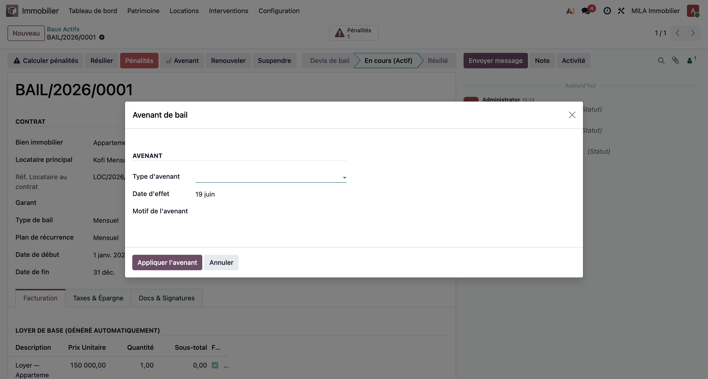
Étapes :
1. Ouvrir BAIL/2026/0001
2. Cliquer 📈 Avenant
3. Dans le dialog :
- Type d'avenant : Révision de loyer
- Date d'effet : 01/07/2026
- Nouveau loyer mensuel : 165 000
- Note : Révision annuelle +10% — indice CIF Togo
4. Appliquer l'avenant
→ Le bail est mis à jour. L'historique (chatter) trace la modification avec date et auteur.
Scénario : Ama Diallo quitte le Bureau B1 et cède son bail à TechTogo SARL à mi-terme.
Étapes :
1. Ouvrir BAIL/2026/0002
2. Cliquer 📈 Avenant
3. Type d'avenant : Changement de locataire
4. Nouveau locataire : TechTogo SARL
5. Date d'effet : 01/08/2026
6. Note : Cession de bail — accord tripartite signé
7. Appliquer l'avenant
→ Le bail reste actif, seul le locataire change. La traçabilité conserve l'historique complet.
Scénario : Fatima Ouedraogo souhaite passer du Studio 1A (75 000 CFA) à l'Appartement 5B (250 000 CFA) dès sa disponibilité.
Étapes :
1. Ouvrir BAIL/2026/0004
2. Cliquer 📈 Avenant
3. Type d'avenant : Changement de bien
4. Nouveau bien : Appartement 5B
5. Nouveau loyer : 250 000
6. Date d'effet : 01/09/2026
7. Appliquer
→ Studio 1A passe en Disponible, Appartement 5B passe en Occupé automatiquement.
Scénario : BAIL/2026/0001 (Kofi Mensah) expire fin décembre. Il souhaite rester 1 an de plus.
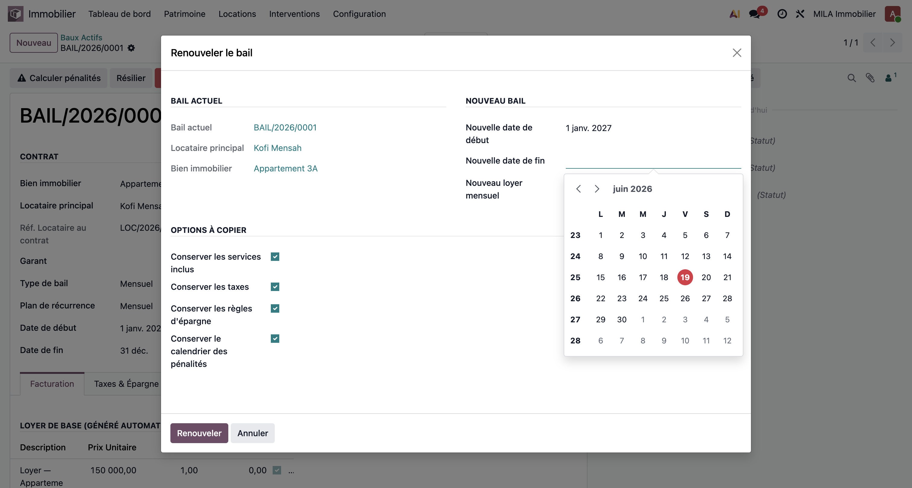
Étapes :
1. Ouvrir BAIL/2026/0001
2. Cliquer Renouveler
3. Dans le dialog :
- Durée : 12 mois
- Nouvelle date de fin : 31/12/2027
- Conditions : inchangées
4. Confirmer le renouvellement
→ Le bail est prolongé jusqu'au 31/12/2027. L'alerte "expire bientôt" disparaît du tableau de bord.
Scénario : Marcel Togbe renouvelle l'Appartement 2B (BAIL/2026/0003), mais le loyer augmente à 130 000 CFA.
Étapes :
1. Ouvrir BAIL/2026/0003
2. Cliquer Renouveler
3. Dans le dialog :
- Durée : 12 mois
- Nouveau loyer : 130 000
- Note : Renouvellement avec révision loyer +8,3%
4. Confirmer
→ Le bail continue avec le nouveau tarif. Les futures factures utilisent 130 000 CFA.
Scénario : Fatima Ouedraogo ne renouvelle pas son bail. Elle donne son préavis 2 mois avant.
Étapes :
1. Ouvrir BAIL/2026/0004
2. Ne pas cliquer Renouveler
3. Ajouter une Note interne (chatter) : "Mme Ouedraogo ne renouvelle pas — préavis reçu le 01/03/2027. Bien disponible au 01/05/2027."
4. Planifier une Activité : "Préparer état des lieux de sortie" — échéance 30/04/2027
5. À la date d'expiration, cliquer Résilier avec motif "Fin de bail"
Scénario : Kofi Mensah quitte l'Appartement 3A à l'expiration prévue.
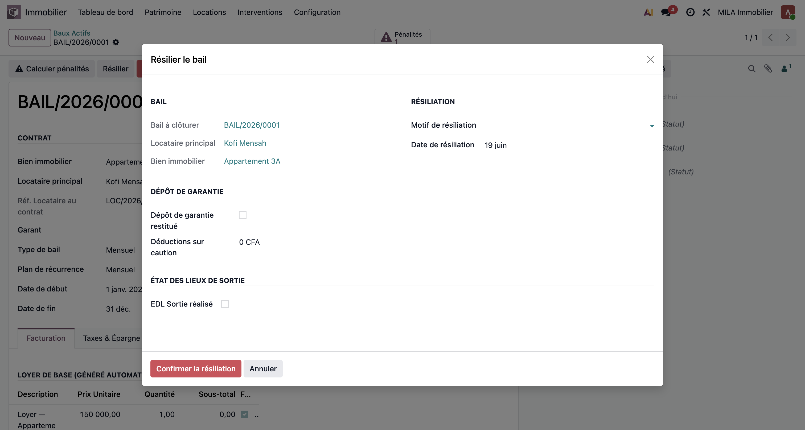
Étapes :
1. Ouvrir BAIL/2026/0001
2. Cliquer Résilier
3. Dans le dialog :
- Date de résiliation : 31/12/2025
- Motif : Fin de bail
4. Confirmer
→ Bail = Résilié, Appartement 3A = Disponible, dashboard mis à jour.
Scénario : Un locataire accumule 3 mois d'impayés. Résiliation pour cause d'impayés.
Étapes :
1. Vérifier les factures impayées via le smart button "X Factures" du bail
2. Cliquer Résilier
3. Dans le dialog :
- Date de résiliation : date d'aujourd'hui
- Motif : Impayés persistants
- Note : 3 loyers impayés (Jan, Fév, Mar 2026) — Mise en demeure envoyée le XX/XX
4. Confirmer
⚠️ Les factures impayées restent dues même après résiliation. Elles continuent à apparaître dans les "Impayés" du tableau de bord jusqu'à leur règlement.
Scénario : Ama Diallo résilie à l'amiable 2 mois avant terme. Restitution de la caution.
Étapes :
1. Ouvrir BAIL/2026/0002
2. Cliquer Résilier
3. Motif : Départ volontaire anticipé — Date : 30/04/2027
4. Confirmer
5. Dans le chatter, ajouter une Note interne : "Caution restituée : 160 000 CFA — virement le XX/XX"
Scénario : Une inondation oblige Kofi Mensah à quitter temporairement l'Appartement 3A. Le bail est suspendu le temps des travaux.
Étapes :
1. Ouvrir BAIL/2026/0001
2. Cliquer Suspendre
3. Le statut passe à Suspendu — le bien peut être mis en "En travaux" manuellement
Réactivation (après travaux) :
1. Ouvrir le bail suspendu
2. Cliquer En cours (Actif) dans la barre de statut
3. Remettre le bien en Occupé
Scénario : Un litige est en cours avec TechTogo SARL. Le bail est suspendu en attendant la décision judiciaire.
Étapes :
1. Ouvrir le bail concerné → Cliquer Suspendre
2. Ajouter une Note interne : "Bail suspendu — litige au Tribunal de Lomé (dossier n°XXX). Reprise prévue après jugement."
3. Planifier une Activité de suivi : "Vérifier décision tribunal" — 3 mois
Scénario : Kofi Mensah n'a pas payé son loyer de Janvier 2025 (150 000 CFA, dû le 01/02/2025). Retard de 148 jours. Pénalité appliquée : 10%.
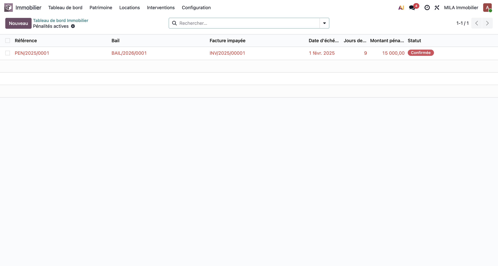
Étapes :
1. Ouvrir BAIL/2026/0001
2. Cliquer Calculer pénalités
3. Le wizard affiche toutes les factures impayées du bail et calcule :
- Facture : INV/2025/00001 — 150 000 CFA
- Retard : 148 jours
- Pénalité (10%) : 15 000 CFA
4. Valider les pénalités proposées
→ PEN/2025/0001 créée : 15 000 CFA, état Confirmée, liée à INV/2025/00001.
Scénario : Le bail prévoit une pénalité fixe de 5 000 CFA par mois de retard (pas de pourcentage).
Étapes :
1. Locations → Pénalités → Nouveau
2. Champs :
- Bail : BAIL/2026/0003
- Facture impayée : sélectionner la facture en retard
- Mode de calcul : Montant fixe
- Montant : 5 000
3. Enregistrer → Confirmer
Scénario : La pénalité PEN/2025/0001 est confirmée. On doit la facturer au locataire.
Étapes depuis la fiche pénalité :
1. Locations → Pénalités → ouvrir PEN/2025/0001
2. Vérifier le montant : 15 000 CFA, état Confirmée
3. Cliquer Facturer la pénalité
4. Une facture est créée : montant 15 000 CFA, liée au locataire Kofi Mensah
5. Valider et envoyer la facture
→ La pénalité passe en état Facturée. Elle disparaît du compteur "Pénalités actives" du dashboard.
Scénario : La porte d'entrée du Magasin RDC est cassée — une réparation urgente est requise.
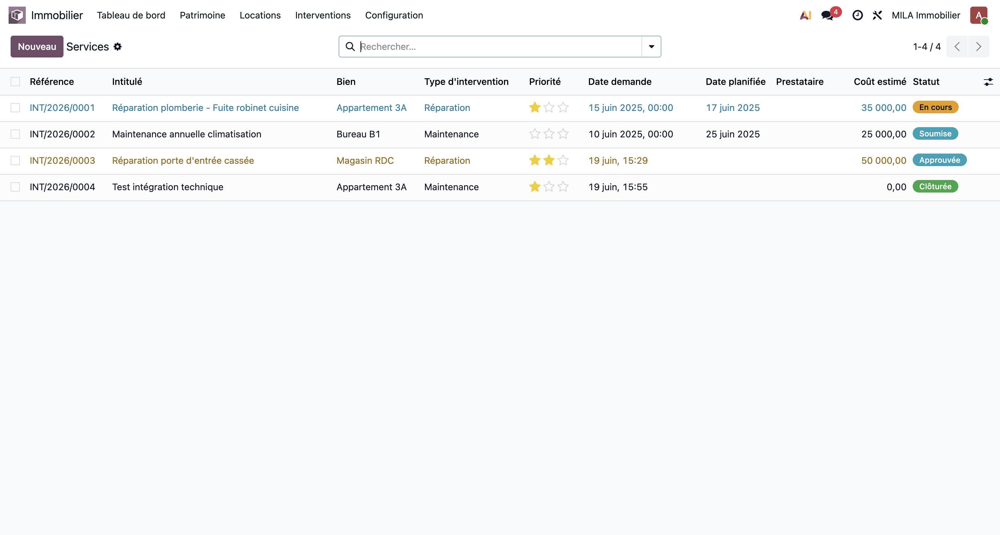
Étapes :
1. Interventions → Services → Nouveau
2. Remplir :
- Intitulé : Réparation porte d'entrée cassée
- Bien : Magasin RDC
- Type : Réparation
- Priorité : ★★★ (Critique)
- Date demandée : aujourd'hui
- Date planifiée : demain matin
- Coût estimé : 50 000 CFA
- Description : "Serrure et mécanisme cassés suite à effraction tentée. Bien sécurisé par locataire avec cadenas provisoire."
3. Enregistrer
4. Soumettre → Approuver
→ L'intervention apparaît immédiatement en rouge sur le tableau de bord.
Scénario : Révision annuelle de la climatisation du Bureau B1.
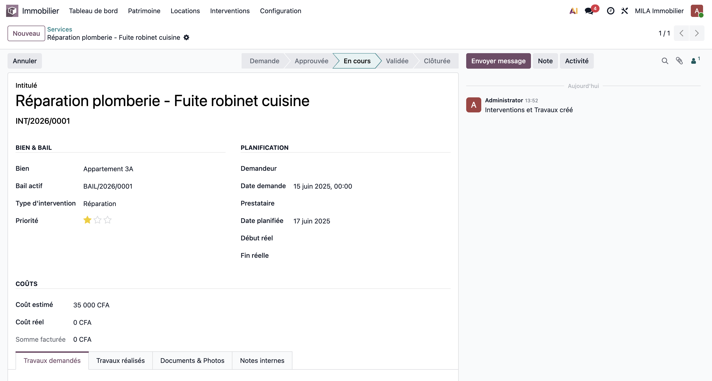
Étapes :
1. Interventions → Services → Nouveau
2. Remplir :
- Intitulé : Maintenance annuelle climatisation
- Bien : Bureau B1
- Type : Maintenance
- Priorité : ★☆☆ (Normal)
- Date planifiée : 15/07/2026 (heure creuse)
- Coût estimé : 35 000 CFA
3. Enregistrer → Soumettre
Scénario : Suivi de la réparation de la fuite robinet (Appartement 3A).
Cycle de vie complet :
Demande → Soumise → Approuvée → En cours → Validation → Validée → Facturée → Clôturée
| Étape | Action | Qui |
|---|---|---|
| 1. Demande | Intervention créée | Gestionnaire |
| 2. Soumettre | Cliquer "Soumettre" | Gestionnaire |
| 3. Approuver | Cliquer "Approuver" + valider le coût | Responsable |
| 4. Démarrer | Cliquer "Démarrer" quand technicien intervient | Responsable |
| 5. Valider | Cliquer "Valider" — travaux terminés | Responsable |
| 6. Facturer | Cliquer "Facturer" si refacturation au locataire | Comptable |
| 7. Clôturer | Cliquer "Clôturer" — archivage | Gestionnaire |
Scénario : Signaler à la comptable qu'une facture de pénalité doit être envoyée.
Étapes :
1. Ouvrir la fiche pénalité (PEN/2025/0001)
2. Dans le chatter, cliquer Envoyer message
3. Taper @ puis le nom de la comptable pour la notifier
4. Message : "@Marie-Claire — PEN/2025/0001 confirmée (15 000 CFA). Merci de facturer et envoyer à Kofi Mensah."
5. Envoyer
→ Marie-Claire reçoit une notification Odoo et un email automatique.
Scénario : Relancer Kofi Mensah pour le loyer impayé dans 3 jours.
Étapes :
1. Ouvrir BAIL/2026/0001
2. Dans le chatter, cliquer Activité
3. Remplir :
- Type : Appel téléphonique
- Date d'échéance : dans 3 jours
- Note : "Relancer Kofi Mensah au +228 90 XX XX XX pour INV/2025/00001 (150 000 CFA en retard)"
- Assigner à : moi-même (ou un collaborateur)
4. Programmer
→ L'activité apparaît dans le calendrier Odoo. Un rappel est envoyé à l'échéance.
Scénario : Consigner une conversation téléphonique pour le dossier.
Étapes :
1. Ouvrir la fiche du bail ou de la pénalité
2. Cliquer Note (pas "Envoyer message")
3. Taper la note : "Appel Kofi Mensah le 19/06/2026 à 14h30. Il indique difficultés financières passagères. Promesse de paiement avant le 30/06/2026."
4. Ajouter
→ La note est visible par tous les utilisateurs Odoo mais n'est pas envoyée au locataire.
Configuration (menu en haut)
Définit les fréquences de loyer disponibles :
- Mensuel · Trimestriel · Semestriel · Annuel
Prédéfinissez des contrats types pour accélérer la saisie. Chaque modèle peut prédéfinir : type de bail, plan, mois d'avance, caution par défaut, clauses standard.
Personnalisez les motifs : Fin de bail, Impayés, Départ volontaire, Force majeure, etc.
Configurable dans les paramètres système. Valeur par défaut : 60 secondes.
Sur chaque liste, utilisez la barre de recherche et le bouton ▼ Filtres :
- Baux : Actifs / Suspendu / Résilié / Expire bientôt
- Biens : Disponible / Occupé / En travaux
- Interventions : En cours / Urgentes / Par bien / Par statut
- Pénalités : Confirmées / Facturées / Par bail
Chaque liste propose : vue tableau (colonnes triables) et vue kanban (cartes visuelles).
| Cliquer sur | Ouvre |
|---|---|
| Tuile KPI | Liste filtrée des enregistrements |
| Ligne d'un bail | Fiche du bail |
| Nom d'un bien dans un bail | Fiche du bien |
| Carte d'une intervention | Fiche de l'intervention |
| Alerte du panneau droit | L'enregistrement concerné |
Q : Le bien reste en "Disponible" après création du bail ?
Le bail doit être confirmé. Cliquer sur "En cours (Actif)" dans la barre de statut du bail.
Q : Les tuiles KPI n'affichent rien ou affichent 0 pour les impayés ?
Les impayés comptés sont les factures validées, non payées, en retard. Les loyers non encore facturés ne sont pas inclus.
Q : Comment voir toutes les modifications sur un bail ?
Le chatter (panneau droit de la fiche bail) trace toutes les modifications avec date et auteur.
**Q : Comment augmenter le loyer sans créer un nouveau bail ## 7. Nouveautés de la Version 4.1 (Juillet 2026)
res.partner de type "Société" est automatiquement généré en arrière-plan et lié à l'immeuble.Trois nouveaux rapports professionnels aux couleurs de la charte graphique de MEA & FILS (bleu marine et or) sont disponibles :
1. Reçu de paiement de loyer : Imprimable depuis n'importe quel paiement reçu (fiche paiement). Il reprend l'identité complète du locataire, la période, la somme en chiffres et en lettres, ainsi que la clause de retard de 10%.
2. Fiche descriptive du bien : Imprimable depuis la fiche d'un bien (Patrimoine → Biens). Contient le statut, les caractéristiques (surface, étage, type), le bail en cours, et l'historique complet des locataires passés.
3. Fiche d'immeuble : Imprimable depuis la fiche d'un immeuble (Patrimoine → Immeubles). Contient des compteurs de statistiques, le taux d'occupation sous forme de jauge visuelle colorée (vert/orange/rouge), et la liste détaillée de tous les appartements/locaux avec leur statut respectif.
deposit_amount > 0 et non payée) ou l'avance de loyer (advance_months > 0 et non payée) n'ont pas été préalablement payées et réconciliées via le reçu d'entrée. Une erreur bloquante guidera l'utilisateur.${owner_name}, ${tenant_name}, ${rent_amount}, ${deposit_amount}, etc. sont remplacés automatiquement en arrière-plan pour générer le contrat rédigé directement visible dans l'onglet "Contrat rédigé" du bail.Pour valider l'ensemble des nouveautés, nous suggérons à la cliente de suivre ces scénarios de test pas-à-pas sur l'environnement de staging.
admin / capelini).| Rôle / Environnement | Adresse | Identifiant | Mot de passe |
|---|---|---|---|
| Staging (Tests) | https://staging-mila.afroit.net | admin |
capelini |
| Production (Réel) | https://mila.afroit.net | client |
client123 |
Support technique AFRO IT : contact@afroit.net | afroit.net
MILA Gestion Immobilière v4.2 — AFRO IT — Juillet 2026